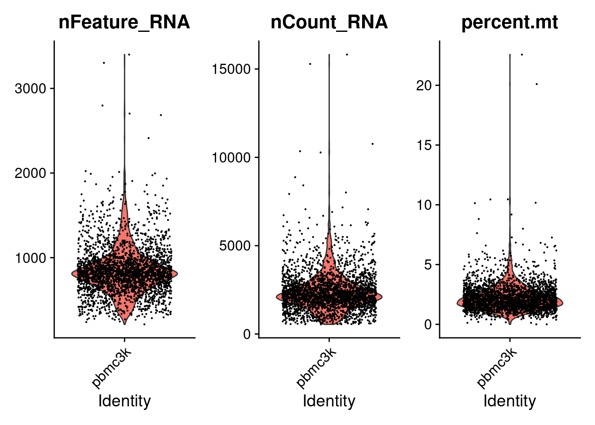
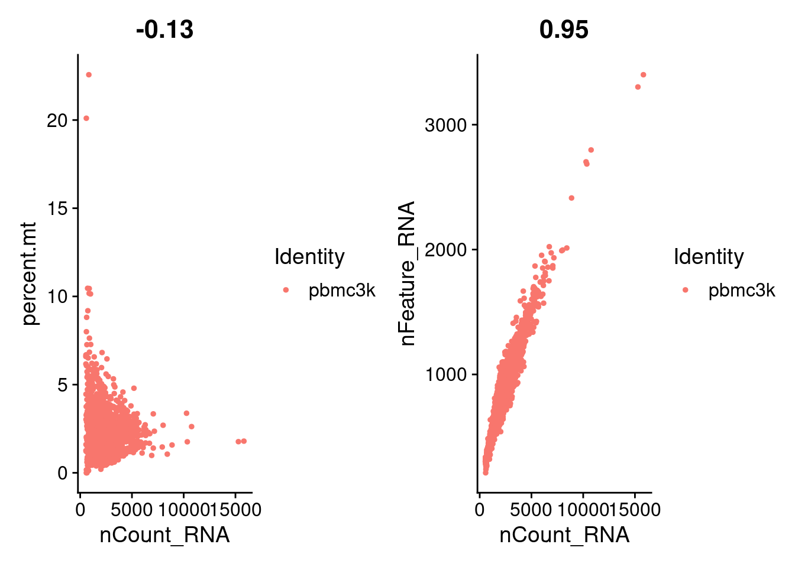
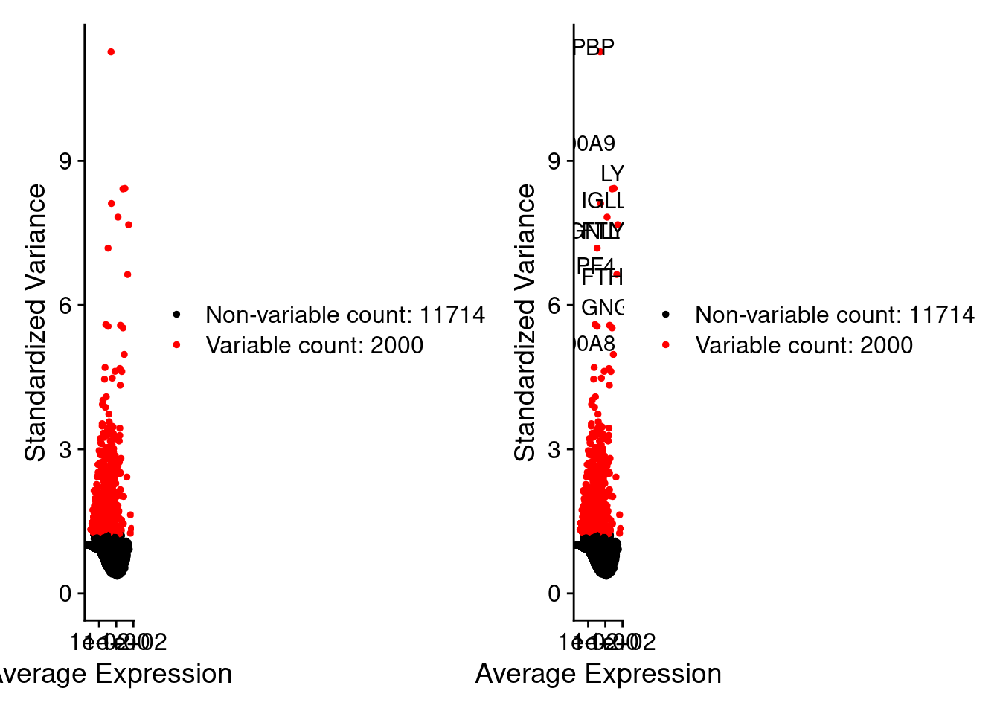
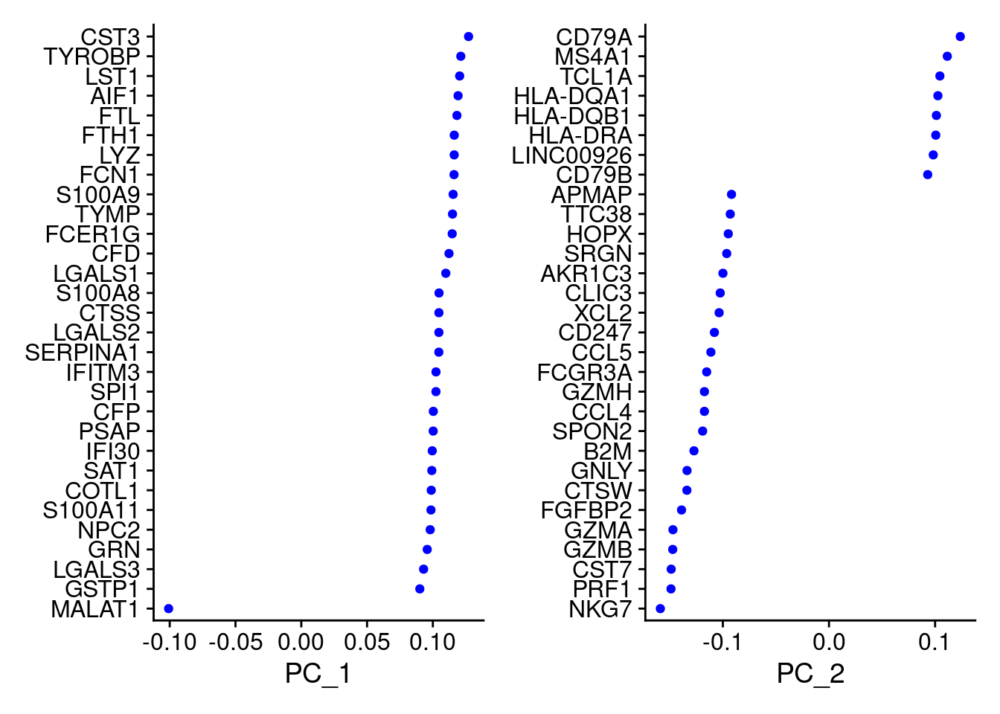
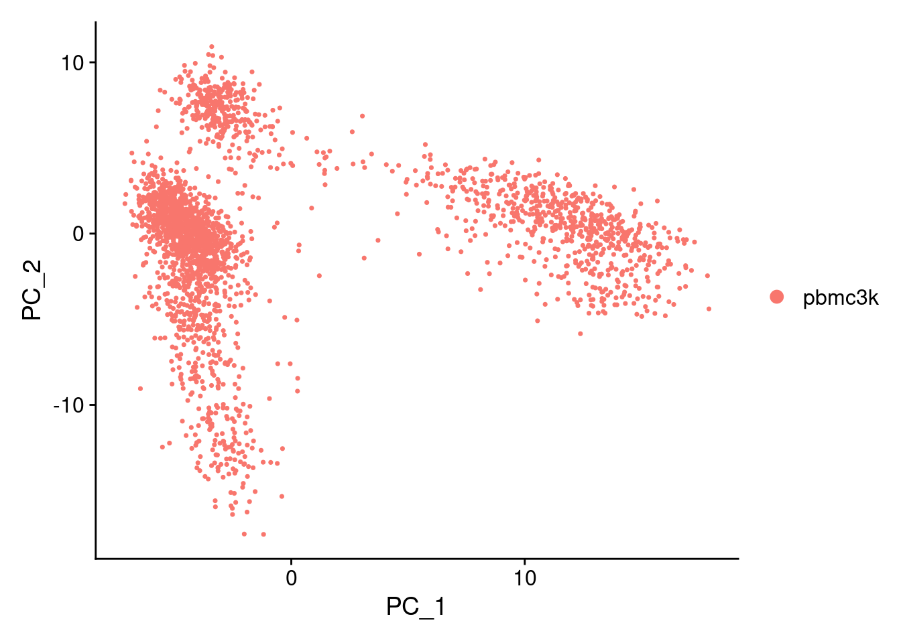
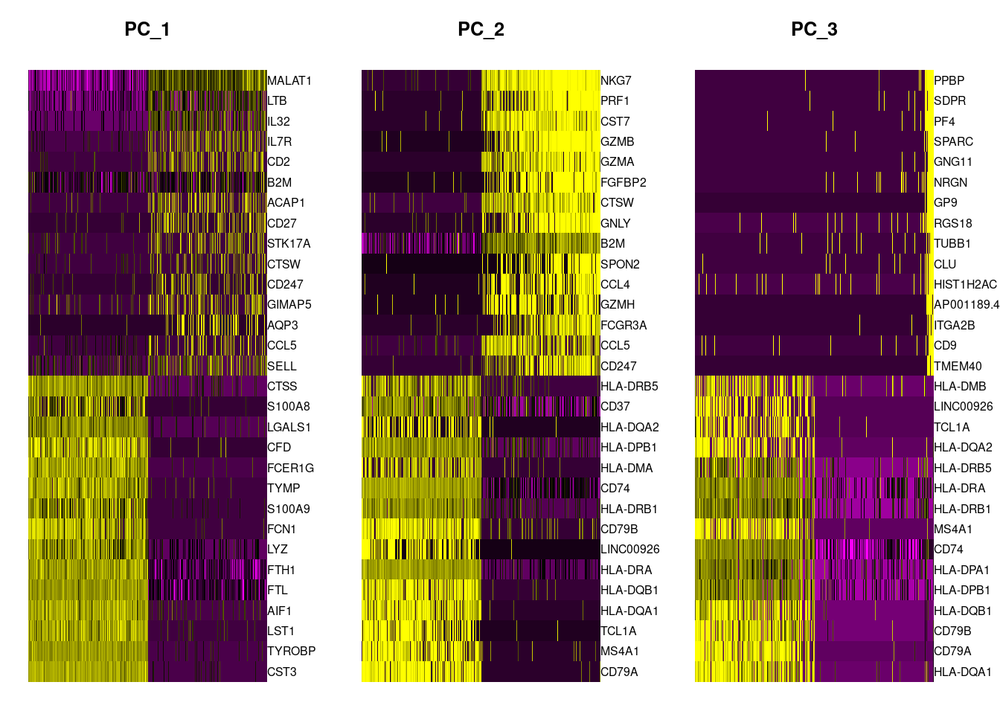

Chapter 2 Seurat
This is a chapter includes example using Seurat to analyze single cell RNA sequencing data.
2.1 The famous pbmc3k
This is the first chapter in Seurat tutorial. You can find the full description here.
Data: 2,700 Periperal Blood Mononuclear Cells (PBMCs) freely from 10X Genomics.
Sequencing techniques: Illumina NextSeq500 with UMI
Data Sturcture: gene in row and cell in column.
library(dplyr)
library(Seurat)
library(patchwork)
# Load the PBMC data
pbmc.data <- Read10X(data.dir = "rawData/filtered_gene_bc_matrices/hg19/")
# Initialize the Seurat object with the raw (non-normalized data)
pbmc <- CreateSeuratObject(
counts = pbmc.data,
project = "pbmc3k",
min.cells = 3,
min.features = 200
)
pbmc## An object of class Seurat
## 13714 features across 2700 samples within 1 assay
## Active assay: RNA (13714 features, 0 variable features)Standard process
1.QC and selecting cells for further analysis
2.Data normalization
3.Detection of highly variable features
4.Scaling the data
1.QC filtering:
# The [[ operator can add columns to object metadata. This is a great place to stash QC stats
# Calculate mitochondrial gene using the start of MT using PercentageFeatureSet()
# Low-quality/dying cells often exhibit extensive Mitochondrial contamination
pbmc[["percent.mt"]] <- PercentageFeatureSet(pbmc, pattern = "^MT-")
head(pbmc@meta.data, 5)## orig.ident nCount_RNA nFeature_RNA percent.mt
## AAACATACAACCAC-1 pbmc3k 2419 779 3.0177759
## AAACATTGAGCTAC-1 pbmc3k 4903 1352 3.7935958
## AAACATTGATCAGC-1 pbmc3k 3147 1129 0.8897363
## AAACCGTGCTTCCG-1 pbmc3k 2639 960 1.7430845
## AAACCGTGTATGCG-1 pbmc3k 980 521 1.2244898Visualize the QC metrics and we use these to filter our cells.
- We filter cells that have unique feature counts > 2500 or < 200.
- We filter cells that have > 5 % mitochondrial counts.
The function for subset is subset()
# Visualize QC metrics as a violin plot
VlnPlot(pbmc, features = c("nFeature_RNA", "nCount_RNA", "percent.mt"), ncol = 3)
# FeatureScatter is typically used to visualize feature-feature relationships, but can be used
# for anything calculated by the object, i.e. columns in object metadata, PC scores etc.
plot1 <- FeatureScatter(pbmc, feature1 = "nCount_RNA", feature2 = "percent.mt")
plot2 <- FeatureScatter(pbmc, feature1 = "nCount_RNA", feature2 = "nFeature_RNA")
plot1 + plot2
pbmc <- subset(pbmc, subset = nFeature_RNA > 200 & nFeature_RNA < 2500 & percent.mt < 5)2.Normalizing the data
Method: LogNormalize, normalizes the feature expression measurements for each cell by the total expression and then multiplies by a scale factor, defaut is 10,000. Then use log-transforms the result. Result are stored in pbmc[["RNA]]@data
pbmc <- NormalizeData(pbmc, normalization.method = "LogNormalize", scale.factor = 10000)3.Feature Selection
We want to find if there is sone features occur in cell-to-cell (high cell-to-cell variation)
# select 2000 Features
pbmc <- FindVariableFeatures(pbmc, selection.method = "vst", nfeatures = 2000)
# Identify the 10 most highly variable genes
top10 <- head(VariableFeatures(pbmc), 10)
# plot variable features with and without labels
plot1 <- VariableFeaturePlot(pbmc)
plot2 <- LabelPoints(plot = plot1, points = top10, repel = TRUE)## When using repel, set xnudge and ynudge to 0 for optimal resultsplot1 + plot2
- Scaling the data
ScaleData()to perform linear dimensional reduction(PCA)
The result is stored inpbmc[["RNA"]]@scale.daa
# make mean expression of each gene across cells is 0
# scale expression of each gene, so the variation across cells is 1, provide equal weight in downstream analysus so that highly-expressed genes do not dominate
all.genes <- rownames(pbmc)
pbmc <- ScaleData(pbmc, features = all.genes)## Centering and scaling data matrix# run PCA
pbmc <- RunPCA(pbmc, features = VariableFeatures(object = pbmc))## PC_ 1
## Positive: CST3, TYROBP, LST1, AIF1, FTL, FTH1, LYZ, FCN1, S100A9, TYMP
## FCER1G, CFD, LGALS1, S100A8, CTSS, LGALS2, SERPINA1, IFITM3, SPI1, CFP
## PSAP, IFI30, SAT1, COTL1, S100A11, NPC2, GRN, LGALS3, GSTP1, PYCARD
## Negative: MALAT1, LTB, IL32, IL7R, CD2, B2M, ACAP1, CD27, STK17A, CTSW
## CD247, GIMAP5, AQP3, CCL5, SELL, TRAF3IP3, GZMA, MAL, CST7, ITM2A
## MYC, GIMAP7, HOPX, BEX2, LDLRAP1, GZMK, ETS1, ZAP70, TNFAIP8, RIC3
## PC_ 2
## Positive: CD79A, MS4A1, TCL1A, HLA-DQA1, HLA-DQB1, HLA-DRA, LINC00926, CD79B, HLA-DRB1, CD74
## HLA-DMA, HLA-DPB1, HLA-DQA2, CD37, HLA-DRB5, HLA-DMB, HLA-DPA1, FCRLA, HVCN1, LTB
## BLNK, P2RX5, IGLL5, IRF8, SWAP70, ARHGAP24, FCGR2B, SMIM14, PPP1R14A, C16orf74
## Negative: NKG7, PRF1, CST7, GZMB, GZMA, FGFBP2, CTSW, GNLY, B2M, SPON2
## CCL4, GZMH, FCGR3A, CCL5, CD247, XCL2, CLIC3, AKR1C3, SRGN, HOPX
## TTC38, APMAP, CTSC, S100A4, IGFBP7, ANXA1, ID2, IL32, XCL1, RHOC
## PC_ 3
## Positive: HLA-DQA1, CD79A, CD79B, HLA-DQB1, HLA-DPB1, HLA-DPA1, CD74, MS4A1, HLA-DRB1, HLA-DRA
## HLA-DRB5, HLA-DQA2, TCL1A, LINC00926, HLA-DMB, HLA-DMA, CD37, HVCN1, FCRLA, IRF8
## PLAC8, BLNK, MALAT1, SMIM14, PLD4, LAT2, P2RX5, IGLL5, SWAP70, FCGR2B
## Negative: PPBP, SDPR, PF4, SPARC, GNG11, NRGN, GP9, RGS18, TUBB1, CLU
## HIST1H2AC, AP001189.4, ITGA2B, CD9, TMEM40, PTCRA, CA2, ACRBP, MMD, TREML1
## NGFRAP1, F13A1, SEPT5, RUFY1, TSC22D1, MPP1, CMTM5, RP11-367G6.3, MYL9, GP1BA
## PC_ 4
## Positive: HLA-DQA1, CD79B, CD79A, MS4A1, HLA-DQB1, CD74, HLA-DPB1, HIST1H2AC, TCL1A, HLA-DPA1
## HLA-DRB1, PF4, HLA-DQA2, SDPR, HLA-DRA, LINC00926, PPBP, GNG11, HLA-DRB5, SPARC
## GP9, AP001189.4, CA2, PTCRA, CD9, GZMB, NRGN, RGS18, CLU, TUBB1
## Negative: VIM, IL7R, S100A6, IL32, S100A8, S100A4, GIMAP7, S100A10, S100A9, MAL
## AQP3, CD2, CD14, FYB, LGALS2, GIMAP4, ANXA1, CD27, RBP7, FCN1
## LYZ, GIMAP5, S100A11, S100A12, MS4A6A, FOLR3, TRABD2A, AIF1, IL8, TMSB4X
## PC_ 5
## Positive: GZMB, S100A8, NKG7, FGFBP2, GNLY, CCL4, CST7, PRF1, GZMA, SPON2
## GZMH, S100A9, LGALS2, CCL3, CTSW, XCL2, CD14, CLIC3, S100A12, CCL5
## RBP7, MS4A6A, GSTP1, FOLR3, IGFBP7, TYROBP, AKR1C3, TTC38, XCL1, HOPX
## Negative: LTB, IL7R, CKB, VIM, MS4A7, AQP3, CYTIP, RP11-290F20.3, SIGLEC10, HMOX1
## LILRB2, PTGES3, HN1, MAL, CD27, GDI2, CD2, ANXA5, CORO1B, TUBA1B
## FAM110A, ATP1A1, TRADD, PPA1, CCDC109B, ABRACL, CTD-2006K23.1, WARS, VMO1, IFITM2# visualize, VizDimReduction(), DimPlot(), DimHeatmap()
VizDimLoadings(pbmc, dims = 1:2, reduction = "pca")
DimPlot(pbmc, reduction = "pca")
DimHeatmap(pbmc, dims = 1:3, cells = 500, balanced = TRUE) After these work, it is time for us to determine the dimensionality of the dataset.